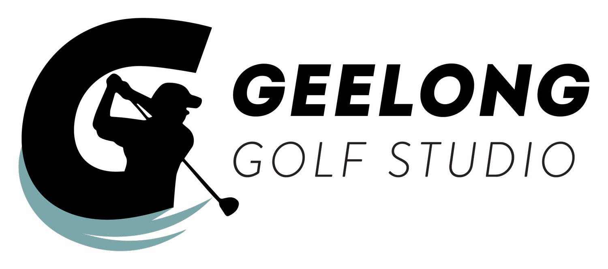
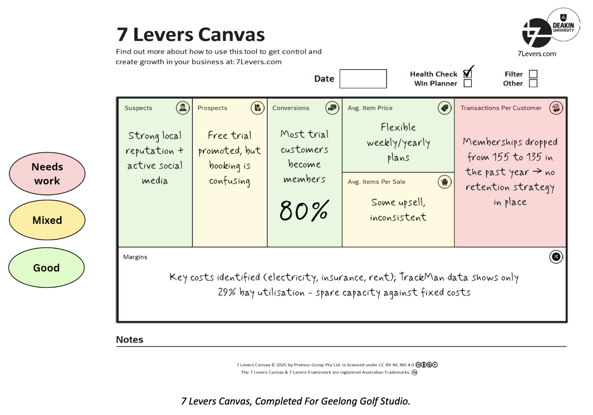

BUSINESS CONSULTING · 2026
Growing Geelong Golf Studio
7 Levers Analysis & Growth Recommendations
A real-client group consulting project completed through Deakin Business Development Clinic. Worked with the business owner to assess business performance, identify growth opportunities and develop a practical member retention strategy.

Geelong Golf Studio, Geelong, Victoria
Project Overview
Worked with Geelong Golf Studio as part of a group consulting project through Deakin Business Development Clinic. The project focused on understanding the business model, evaluating its customer journey and identifying opportunities for sustainable growth.
Using the 7 Levers Framework, our team assessed different areas of business performance and developed a practical recommendation to address the most significant opportunity.
155 → 135
Membership decline
Approximately 13% decrease~80%
Trial conversion rate
Estimated by the business owner200
Membership target
Long-term business goalBusiness Diagnosis
Conducted a business diagnosis covering Geelong Golf Studio's operations, industry trends, competitor positioning, target customers and marketing activities.
Our research identified several strengths, including premium TrackMan technology, flexible 24/7 access and a strong estimated trial-to-membership conversion rate. However, membership had declined from approximately 155 to 135 members, highlighting an opportunity to improve customer retention.
We also reviewed competitor offerings, membership pricing and the customer journey to understand the studio's market position and potential areas for improvement.
Client Engagement & Research
Conducted an online client interview via Zoom with Aaron Rayson, the owner and founder of Geelong Golf Studio, to understand the business, its goals, operations and challenges.
Reviewed membership information and existing business practices shared by the client. Additional research was conducted into local competitors, industry trends and customer retention strategies to support our analysis.
7 Levers Analysis
Applied the 7 Levers Framework to evaluate the business across seven areas: Suspects, Prospects, Conversion, Average Item Price, Average Items per Sale, Transactions per Customer and Margins.
Our assessment identified Transactions per Customer as the priority lever requiring improvement. While the studio had some customer acquisition and conversion activities in place, it lacked a formal process to monitor declining member attendance and proactively prevent cancellations.

The 7 Levers Canvas used to structure our business analysis and identify potential growth opportunities.
Key Business Opportunity
The analysis highlighted a gap in the studio's member retention process. Currently, customers were generally surveyed only after deciding not to renew their memberships, limiting the opportunity for early intervention.
We identified an opportunity to monitor member attendance more proactively and engage with members showing signs of declining activity before they disengaged completely.
KEY RECOMMENDATION
Proactive Member Re-engagement
Recommended using GymMaster's Retention Risk functionality to identify members showing signs of disengagement, followed by automated personalised follow-up emails to encourage members to return and provide feedback.
Proposed Implementation
The recommendation was designed around GymMaster, the existing membership management software used by the studio. This approach avoids introducing an additional software investment.
- Identify at-risk members: Use the Retention Risk widget to review members with declining attendance.
- Create email templates: Develop personalised follow-up emails using GymMaster's member information fields.
- Set up automation: Configure Task Automation to send follow-up emails to identified high-risk members.
- Monitor engagement: Review member responses and engagement to assess the effectiveness of the retention strategy.
Based on our correspondence with GymMaster support, the retention tools were available within the studio's existing account, with the proposed setup estimated to take approximately 30 minutes.
Expected Business Impact
The recommendation aimed to improve member retention through early intervention, personalised communication and a more consistent follow-up process.
By using existing software and automating routine communication, the proposed approach offers a practical, low-cost solution that can be managed alongside the owner's existing responsibilities.
The team's objective was to achieve a 10% improvement ("10% win") in the selected Transactions per Customer lever, supporting the studio's longer-term goal of reaching 200 members.
Deliverables & Presentation
Consolidated the team's business diagnosis, 7 Levers analysis, supporting research and strategic recommendation into a consulting report prepared for the business owner.
Presented the findings and proposed implementation approach to communicate practical opportunities for improving business performance.
Skills Demonstrated
This was a group consulting project completed through Deakin Business Development Clinic. The analysis and recommendations were developed for the client; the proposed retention strategy is not presented as an implemented outcome. Business figures are based on information shared by the client and research available to the team.